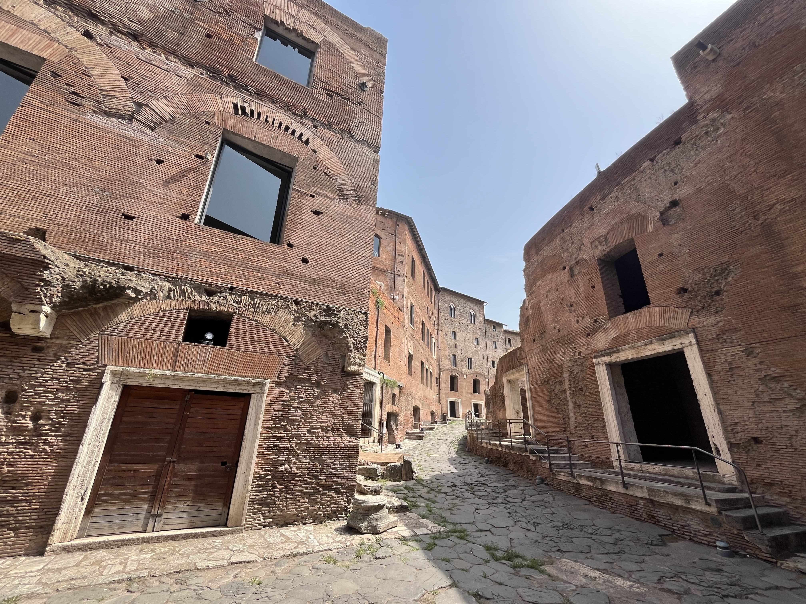
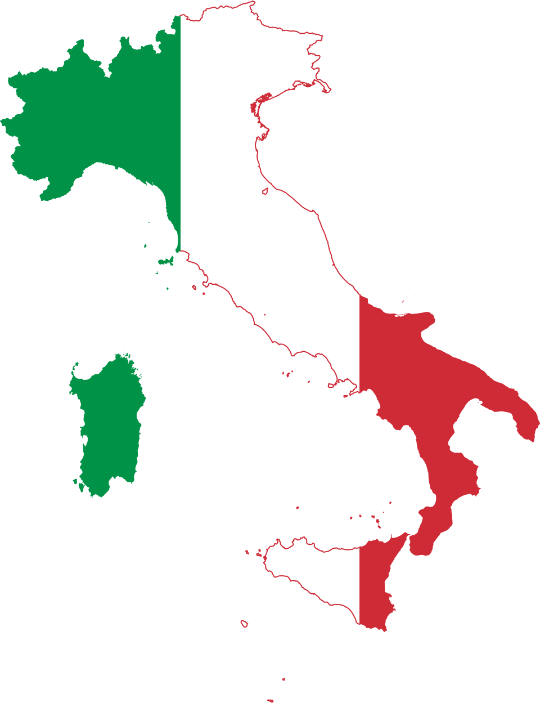

Planning Your Stay
Master Booking Checklist
Rome rewards the prepared. Here is the temporal map for your reservations.
Armando al Pantheon: Tiny and historic. Book as soon as you have your dates.
Palazzo Farnese Tour: Exclusive guided tours of the French Embassy (Sangallo, Michelangelo & Carracci frescoes).
The Colosseum: Look for the "Full Experience" tickets.
Seu Pizza Illuminati: The best modern dough in the city.
CiPASSO: Modern Roman pastas and bistrot dining.
53 Untitled: Creative tasting plates right in our neighborhood.
Start at Trajan's Market, then eat at Piccolo Buco (right when they open), then throw a coin in the Trevi, then tour the Galleria Doria Pamphilj, then pass the Pantheon on the way to Chiesa di San Luigi dei Francesi, then visit Piazza Navona, then (time and energy permitting) visit Castel Sant'Angelo before dining at CiPASSO, then have a glass of wine and some gelato and cheese at Ruma.
Day 1: Coffee and croissant at Barnum, then visit Welcome to Rome, then tour the Vatican Museum and/or St. Peter's Basilica, then grab a Trapizzino, then visit Castel Sant'Angelo, then have some wine at Enoteca Costantini, then dinner at CiPASSO. If you're still standing, visit La Saletta Karaoke or NUR BAR.
Day 2: Walk through Piazza Navona, coffee at Sant'Eustachio, visit Chiesa di San Luigi dei Francesi, visit Basilica di Sant’Agostino, visit the Pantheon, grab an All'Antico Vinaio if the line is short or get some pizza al taglio at Forno Ceralli 1920, then some gelato at Giolitti. Tour the Monumento a Vittorio Emanuele II or the Capitoline Museum before visiting the Colosseum, the Roman Forum, or Trajan's Market. Dine at 53 Untitled and then do the Campo Wine Crawl.
Day 3: Grab a small bite at Sto Bene or Scrocchia before walking through the Ghetto over to Bocca della Verita. Then walk over past the Circo Massimo to the Terme di Caracalla. Then cab to Gourmandise for gelato, then walk to Elementare for Roman pizza and suppli, then cab to Galleria Borghese. Walk to Terrazza pel Pincio for the sunset. Follow Via del Babuino to the Spanish Steps. Throw a coin in the Trevi. If you still want pizza and don't mind a line, dine at Piccolo Buco, otherwise Rosina. Visit Ruma for gelato and wine. Trek over to Latteria and Ma Che Siete Venuti A Fa.
Follow the Classic Weekend plan, then dive deeper into Rome’s evocative hidden sanctuaries, secluded parks, and monumental imperial ruins:
Day 4: Head south along the ancient cobblestones of the Appian Way to descend into the subterranean Catacombe di San Callisto. Afterwards, head over to the Caelian Hill to discover the unique 5th-century circular Basilica di Santo Stefano Rotondo al Celio, followed by excellent cured meats and natural wine at Fuorinorma. Finish your afternoon enjoying the sweeping sunset over the Roman skyline from the Giardino degli Aranci on the Aventine Hill.
Day 5: Since the Baths of Caracalla are already covered on Day 3, dedicate this morning to the colossal ancient ruins of the Baths of Diocletian (Terme di Diocleziano) and its peaceful cloister gardens designed by Michelangelo. Walk to the opulent Baroque halls of Gallerie Nazionali di Arte Antica - Palazzo Barberini, then tour the magnificent private collection inside Galleria Doria Pamphilj on Via del Corso. Conclude your Roman getaway with a celebratory dinner at Armando al Pantheon.
How many hills was Rome originally built on?
Answer: C - 7 Hills.
The seven hills of Rome east of the Tiber form the geographical heart of Rome: the Aventine, Capitoline, Caelian, Esquiline, Palatine, Quirinal, and Viminal. They were the site of the first settlement of the ancient city.
Rome holds the world's densest concentration of Michelangelo Merisi da Caravaggio's dramatic chiaroscuro masterpieces. Here is a curated one-day walking route to experience his revolutionary public altarpieces, major gallery collections, and historic haunts (Note: Everyone's shoulders and knees need to be covered to visit the churches. This itinerary is best to do on Friday or Saturday to take advantage of extended schedules):
Masterpieces: The Saint Matthew Cycle (The Calling of Saint Matthew, The Inspiration of Saint Matthew, and The Martyrdom of Saint Matthew), Contarelli Chapel.
Bring €1 or €2 coins to light the chapel and watch Caravaggio's dramatic beam of divine light illuminate Matthew's conversion. Free admission.
Masterpiece: Madonna di Loreto (also known as Madonna dei Pellegrini), Cavalletti Chapel.
Caravaggio scandalized Roman society by depicting the Virgin Mary barefoot on a weathered doorstep, greeting kneeling peasants with dirt-stained feet. Free admission (open daily).
Historic Studio & Haunt: Caravaggio's residence and atelier (1603–1605).
Wander down this quiet cobblestone alley in Campo Marzio where the master lived and worked. He was notoriously sued by his landlady Prudenzia Bruni after cutting a hole in the ceiling without permission to let overhead light in for his towering canvases. Insider Note: The home of Maddalena Antognetti ("Lena")—Caravaggio's model and lover who posed as Mary—is just down the street near where Vicolo del Divino Amore meets Via dei Prefetti; her actual doorway is celebrated as the doorstep seen in Madonna di Loreto.
Masterpieces: The Crucifixion of Saint Peter and The Conversion on the Way to Damascus, Cerasi Chapel.
Located at Piazza del Popolo. These two monumental canvases flank Annibale Carracci's altarpiece, displaying Caravaggio's mastery of raw realism and dynamic diagonal tension. Free admission (bring coins for lights).
Masterpieces: Boy with a Basket of Fruit, Young Sick Bacchus, David with the Head of Goliath, Madonna and Child with Saint Anne, and Saint Jerome Writing.
Set within the lush gardens of Villa Borghese, this world-renowned gallery holds Rome's most prized concentration of Caravaggios alongside Bernini's celebrated sculptures. Strict timed-entry tickets must be booked weeks in advance.
Masterpieces: Judith Beheading Holofernes, Narcissus, and Saint Francis in Meditation.
Experience the visceral intensity of Judith in this palatial Baroque museum, complete with Bernini's celebrated grand staircase and Pietro da Cortona's soaring ceilings. Last entrance 6:00 PM; closed Mondays.
Masterpieces: Rest on the Flight into Egypt, Penitent Magdalene, and John the Baptist (Youth with a Ram).
Housed along Via del Corso within a magnificent private princely palace. These works highlight Caravaggio's early, lyrical mastery of light, nature, and human vulnerability. Last entrance 7:00 PM.

Top-tier cultural sites, ancient marvels, and world-class collections across Rome where you can experience extraordinary art and history without fighting massive ticket lines or booking months in advance:
- Mercati di Traiano Museo dei Fori Imperiali – Emperor Trajan’s multilevel ancient Roman market complex overlooking the Imperial Fora.
- Galleria Doria Pamphilj – Spectacular private palace on Via del Corso stuffed with masterpieces by Caravaggio, Velázquez, and Bernini.
- Chiesa di San Luigi dei Francesi – Home to Caravaggio’s famous Saint Matthew cycle; free entry in the heart of the Centro Storico.
- Castel Sant’Angelo – Hadrian's towering cylindrical fortress offering unmatched rooftop vistas over St. Peter's and the Tiber.
- Gallerie Nazionali di Arte Antica - Palazzo Barberini – Colossal Baroque palace with Bernini, Borromini, Raphael's La Fornarina, and Caravaggio.
- Musei Capitolini – The world's oldest public museum on Michelangelo’s Piazza del Campidoglio with the She-Wolf and Marcus Aurelius.
- Monumento a Vittorio Emanuele II – The landmark "Altare della Patria" featuring breathtaking panoramic terrace views across the ancient forum.
- Museo Nazionale Romano, Terme di Diocleziano – Vast ancient imperial baths and cloister gardens designed by Michelangelo.
- Terme di Caracalla – Giant brick ruins of ancient imperial baths set among pine trees with VR reconstruction headsets available.
- Basilica di Santo Stefano Rotondo al Celio – Unique 5th-century circular church on the Caelian Hill with vivid Renaissance frescoes.
- Galleria Spada – Located just around the corner in Regola; famous for Borromini’s forced-perspective optical illusion gallery.
- Area Archeologica Stadio di Domiziano – The archaeological ruins directly beneath Piazza Navona exploring ancient athletics and gladiators.
- Museo Napoleonico – Quiet, elegant museum near the Tiber housing Bonaparte family art, memorabilia, and portraits.
If you have extra time to venture beyond the capital, here are our recommended excursions:
- Hadrian's Villa – Tivoli's sprawling imperial retreat of lakes, colonnades, and Greek-inspired palaces.
- Ostia – Rome’s exceptionally preserved ancient seaside port city, reachable by regional train in under 45 minutes.
-
Florence – Renaissance cradle just 1 hour and 30 minutes away via high-speed Frecciarossa train from Termini.
Book Uffizi, the Duomo rooftop tour, and Accademia well in advance.
- Bologna – Italy's culinary capital, famed for mortadella, ragù, and historic porticoes (approx. 2 hours via high-speed train).
-
Naples – World-capital of pizza, ancient alleys, and extraordinary cultural treasures, only 1 hour and 10 minutes via high-speed rail.
Don't miss the Sansevero (book in advance), the Archeological Museum and Pio Monte della Misericordia. Get the Genovese pasta at Monsu. Caserta is nearby and has the Royal Palace and I Masanielli di Francesco Martucci (pizza). Stay overnight if you want to do Herculaneum and Pompeii.
- Venice – The timeless canals, bridges, and Byzantine architecture of the Serenissima.
-
Cinque Terre – The dramatic pastel cliffside fishing villages of the Ligurian coast.
Stay in La Spezia, dine at Osteria della Corte. Take the train to Manarola and Riomaggiore.
-
Genova – Historic maritime republic with grand palaces and coastal excursions.
The Galata Museo del Mare (maritime museum) and Palazzo Bianco (Caravaggio) are great. Portofino is a tourist trap but Recco and Rapallo are both cool.
-
Ischia – Lush volcanic island in the Gulf of Naples, renowned for natural thermal hot springs and tranquil Mediterranean vistas.
Stay in Forio to be closer to Poseidon, Negombo, La Mortella, Alchimista and D'Ambra. But you can also stay in Ischia (Porto) which is close to the castle, Cavascurra, Ristorante Alberto, shopping, and nightlife.
-
Sicily – Rich Norman-Arab architecture, active volcanoes, and azure coastlines.
Skip fishing and Siracusa in the summer. For wine, visit Benanti and Girolamo Russo.
What does the name "Italy" originally translate to?

Answer: B - The Land of Veal ("víteliú", "vitulus" -> "vitella").
The name Italy originally applied only to the southern tip of the peninsula (modern-day Calabria). It was only during Roman expansion that the term grew to encompass the entire peninsula up to the Alps.
Our building was constructed in 1800. Therefore there are no elevators to reach Lily Terrace on the third piano (4th floor for Americans). Please make sure all guests are able to handle three flights of stairs.